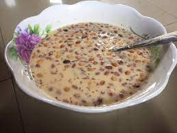

Gari Soakings

Description
Gari Soaking is popular Ghanaian dessert made with gari (a powdery food material flour made from the tuberous roots of a cassava plant). As the name implies, it is made by soaking the gari in water or milk.
Ingredients
- Gari
- Milk
- Sugar
- Groundnuts
- Water
Steps
- Pour desired amount of gari into a bowl or a cup
- Soak the gari in a reasonable amount of water
- Add desired amount of milk, sugar, and groundnuts
- Enjoy before the gari hardens